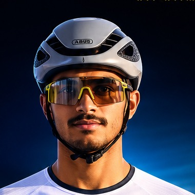
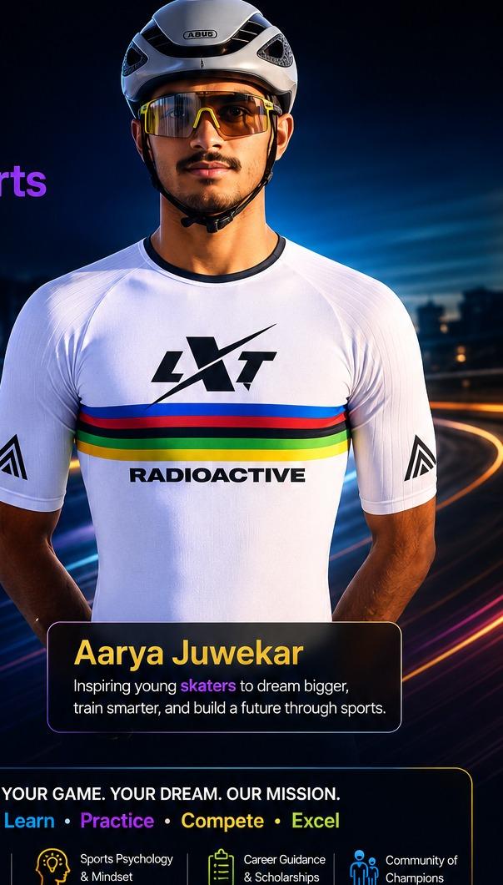
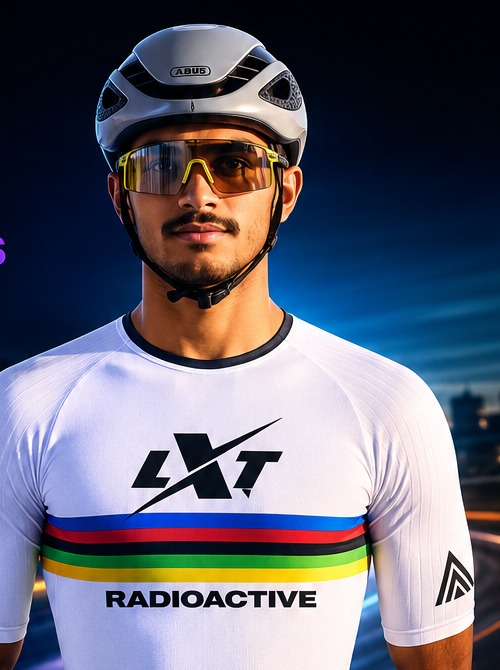
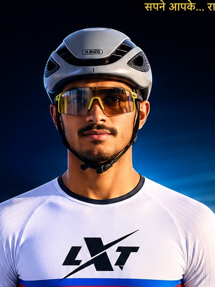

W4Y Mentor · Sports & AthleticsInternational-Level Speed Skater · Team India



To even be eligible for Team India speed skating trials, a skater must already be a national medalist. To be selected, a skater must secure two higher national medals, competing against the top 30 national medalists in the country — and from that pool, only 4 athletes are chosen to represent India. Aarya earned his place in Team India through years of discipline and consistent performance against that exact filter.
Aarya's senior international debut — and he was the youngest competitor in his category. Racing against 80 of the world's best senior skaters, he placed 14th in the 1000m and finished in the top 20 in the 500m, in his very first year competing at senior international level.
Secured a silver medal in the 1000m at the National Games in Gujarat, defeating several seasoned senior athletes, and contributed to Team Maharashtra's gold-medal-winning relay squad.
| Level | Selected results |
|---|---|
| World Trials 2022 (Juniors) | Gold — 500m, Dual TT, One Lap Road · Silver — 1000m |
| World Roller Games Trials 2024 (Seniors) | Silver — 500m, 1000m · Bronze — Dual TT |
| 2023 RSFI Nationals | Gold — 200m Dual TT, 500m, 1000m · Silver — One Lap Road |
| 2024 RSFI Nationals | Gold — 500m, 1000m, One Lap Road · Silver — 200m Dual TT |
| 2025 RSFI Nationals | Bronze — 1000m · Silver — One Lap Road |
| Junior Nationals (2014–2020) | Multiple Gold/Silver/Bronze across SGFI, RSFI & ICSE meets — first national medal in 2014 |
"Earning my place in Team India was not just a result of medals, but of years of discipline, sacrifices, and unwavering belief during moments when the odds were heavily stacked against me. Perseverance, consistency, and courage can carve a path even through the toughest selection systems."
Real missions, real journey — from your first steps in a sport to what it actually takes to represent India.
Explore Future Studio →